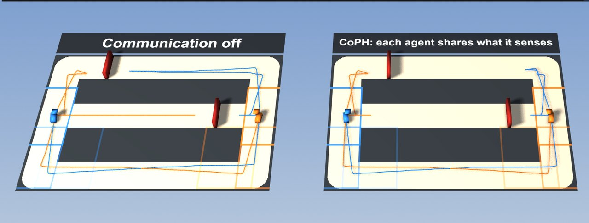
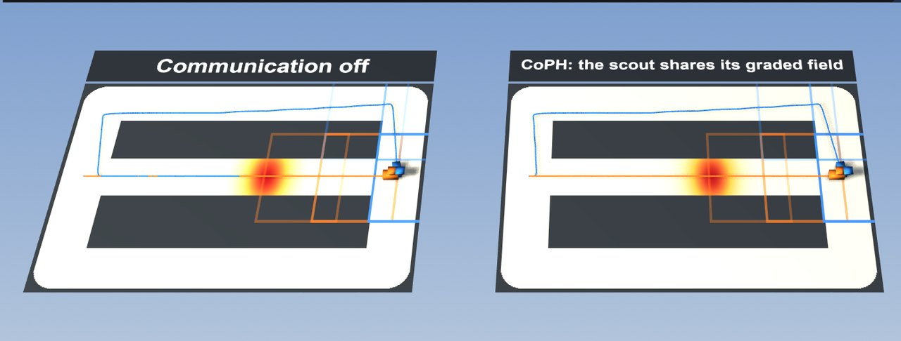

CoPH: navigation energies learned stage by stage, and shared
CoPH-Stagewise learns an agent's navigation energy online, one stretch of route
at a time, commits a revision only when it passes validation, and books every jump it causes
apart from the physical work. Agents share what they have learned as small packets. GRL-SNAM
carries the method as grl_snam.coph and shows its two demos in 3-D: communication
off on the left, CoPH on the right, on the same seed.
The scripted walkthrough of python -m grl_snam.ariadne coph
walkthrough, rendered at 1920×1080 on libcvc master (4.0.6+). It replays episodes computed by
GRL-SNAM's vendored copy of the reference, with no change to the method; the viewer only
reads them. Each caption's times come from the episodes.
The same viewer and walkthrough, running in the page: Python, numpy and
libcvc's Ariadne compiled to WebAssembly. Pause it, drag the time, switch the heat map to an
agent's own field, or fly the camera. It plays back the episodes computed with torch when the
site was built, since torch does not run in a browser. The first visit downloads about
35 MB; later visits come from the browser's cache.
The method
Stages. The route is learned in 3 × 4 m stages. Each agent keeps the
current stage and the two before it, and revises them as new evidence arrives.
A field it fits. Each stage holds a risk field (a 4 × 4 grid of radial
basis functions) fitted to what the agent senses. With obstacle barriers and the goal it
makes the potential V.
The plant. A point of unit mass: q′ = v,
v′ = −d v + u, commanded by
u = −∇V − 1.4 v with |u| ≤ 3.
A gate. Every 8 control steps an update proposes a new field, damping and
policy, and is kept only if held-out losses do not worsen by more than a slack.
A ledger. Work, heat and kinetic change balance to about 1e-15 a step, and every
jump in the shaping energy is booked apart.
Packets. An agent sends field anchors with their gradients, a covariance and
provenance. A receiver takes one in only under its own gate.
What the reference establishes
Crossing: what one agent has seen saves the other's route
Two agents start at opposite ends of a corridor maze whose two doors are shut, and
neither knows where. When each sends what it senses, the team's detour falls by
27.1 m on both seeds (28.0 m predicted in advance), with 16/16 goals
and no collisions over 2 seeds × 4 arms.

Hazard: share the field, not the decision
A risk-tolerant scout (risk weight 0.25) crosses a graded hazard, and a risk-averse
carrier (weight 6) follows 25 s later. With the scout's field shared, the carrier's
worst-case excess cost is 4.6, against 68.1 with no communication, over
1 seed × 4 scenes × 8 arms with 64/64 goals.

These are CoPH-Sense's own numbers (CROSSING_DEMO.md, HAZARD_DEMO.md), which
its code reproduced on 2026-11-09 to 0.1. GRL-SNAM's vendored copy reproduces upstream's 40
episodes field for field.
What it does not establish
Replay. It runs in both arms, but no gain from it is established.
Receiver field fitting. It runs in the CoPH arm. The hazard arm without it ties
the shared field at 4.6, as raw readings do at more bytes: received anchors reach the
carrier's router either way.
Adaptive-rate sharing. It is in the code, but neither demo exercises it: both
arms export every 0.96 s.
The validation gate cannot reject. Its slack, 0.003, is about 100 times the
median held-out field loss (2.8e-5). Over the reference's 40 episodes it kept all 5,212
updates, 3,112 of them with a worse held-out field loss (by at most 0.0022).
No contact between agents. Each agent senses only the walls, the doors and the
risk, so in crossing the two pass through each other on the south corridor.
How GRL-SNAM carries it
grl_snam.coph:
the method's core and the two demos, vendored from CoPH-Sense at c1f1ff3
(25 modules), with every local change recorded. grl-snam coph crossing|hazard
runs them.
grl-snam ariadne coph:
this viewer. It runs the vendored runner live, one process per arm, or replays a run. Its
panels show each agent's learner, packets and energy ledger, and the learning charts
show each update's held-out loss against the gate.
Goldens generated from the vendored Python check a C++ port in libcvc's
cvc::nav, step by step.
Coming
CoPH learning in the page. torch does not run in a browser, so running the
method itself in the page waits for the C++ port's bindings in a libcvc release.
CoPH drives the cars (demo 2b, exploratory). One learner per car of libcvc's
cars template. Its first report is the allocation residual and the ledger, not a
navigation gain.